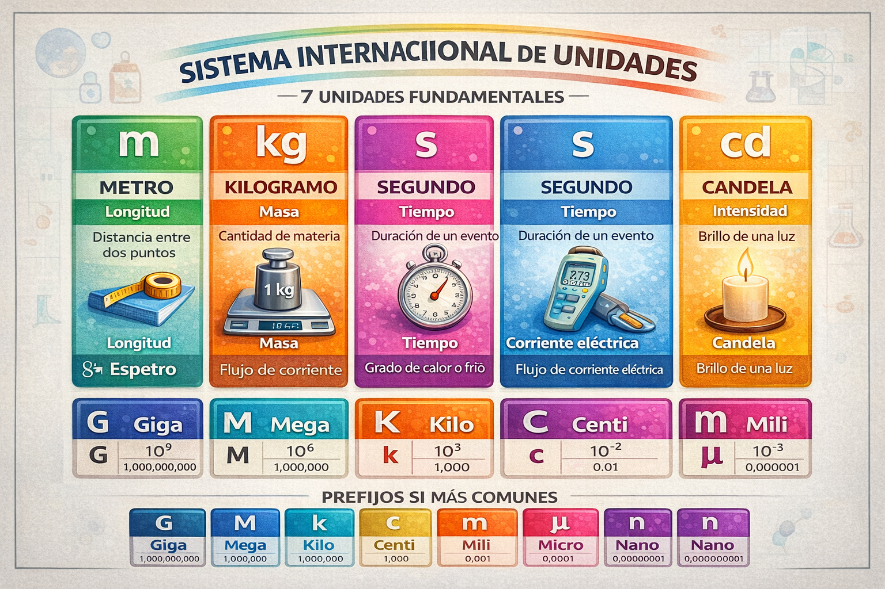
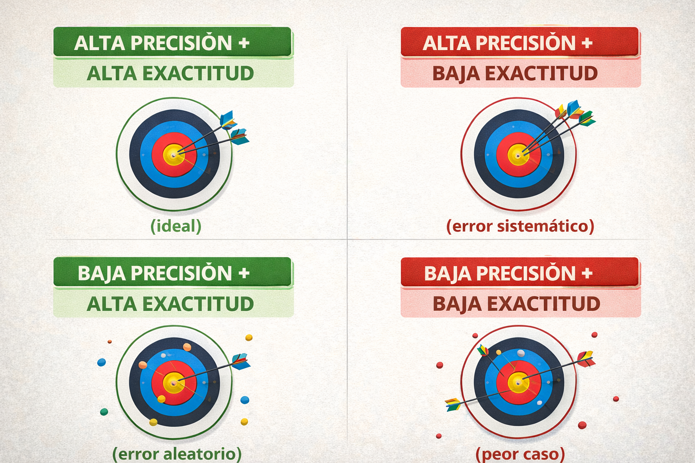
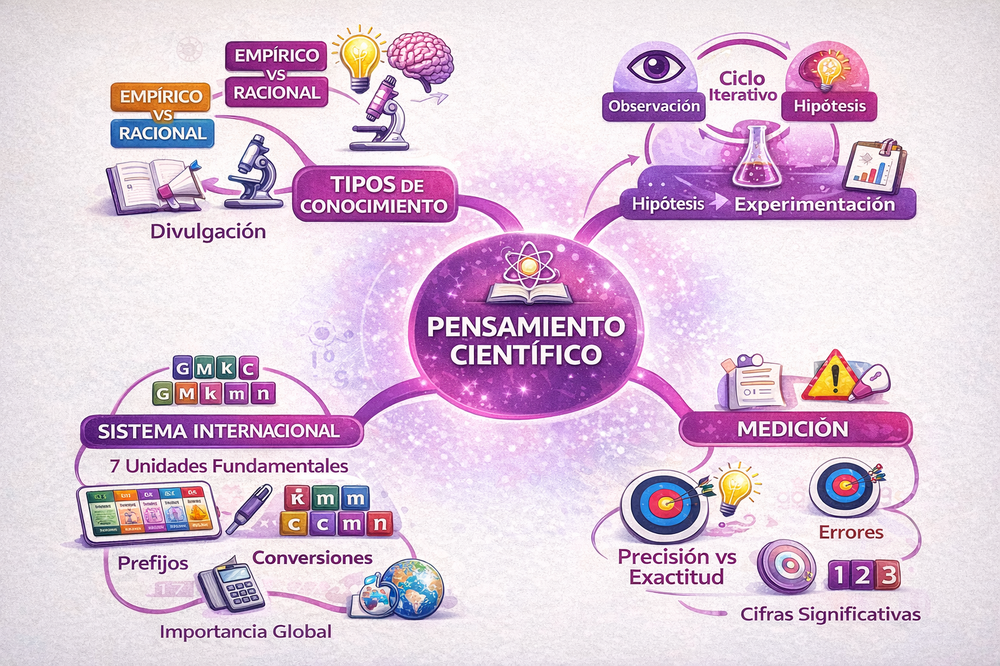

Dirección General de Educación Media Superior
| Coordinación Editorial | Dirección Académica GCA |
| Diseño Instruccional | Departamento de Desarrollo Curricular |
| Revisión Técnica | Academia de Ciencias Naturales |
| Diseño Editorial | Departamento de Producción Editorial |
Aviso Legal
Este material es propiedad del Grupo Cultural Albatros. Queda prohibida su reproducción total o parcial sin autorización expresa. Las imágenes, diagramas y contenidos están protegidos por derechos de autor. El uso de este manual está destinado exclusivamente a fines educativos dentro de las instituciones del Grupo Cultural Albatros.
Bienvenido al curso de Ciencias Naturales, Experimentales y Tecnología I. Este manual ha sido diseñado para acompañarte durante tu primer semestre de preparatoria en el fascinante mundo de la química.
La química es la ciencia central que conecta la física con la biología, la medicina con la ingeniería, y la tecnología con el medio ambiente. Comprender sus principios te permitirá explicar fenómenos cotidianos, desde por qué el agua hierve hasta cómo funcionan los medicamentos en tu cuerpo.
Este manual está organizado en 6 unidades temáticas:
Ciencia, Ingeniería y Sostenibilidad
El modelo educativo Albatros integra tres pilares fundamentales que guían tu formación científica y te preparan para los retos del siglo XXI.
Método científico como herramienta de pensamiento. Observar, cuestionar, experimentar y concluir con evidencias.
Aplicación práctica del conocimiento. Diseñar soluciones, prototipar y resolver problemas del mundo real.
Conciencia ambiental y responsabilidad social. Química verde, economía circular y cuidado del planeta.
En este curso tú eres el protagonista. Cada tema incluye actividades donde aplicarás lo aprendido, reflexionarás sobre tus resultados y construirás tu propio conocimiento. El instructor es tu guía, pero el aprendizaje depende de tu participación activa.
Este manual está diseñado para estudiantes de primer semestre de preparatoria. No se requieren conocimientos previos avanzados de química, pero sí se espera disposición para aprender y participar activamente.
| Competencia | Descripción |
|---|---|
| Pensamiento crítico | Analizar información, distinguir hechos de opiniones, evaluar fuentes |
| Comunicación científica | Expresar ideas con lenguaje técnico, interpretar gráficos y tablas |
| Trabajo experimental | Seguir procedimientos, registrar datos, aplicar normas de seguridad |
| Uso de tecnología | Emplear simuladores, herramientas digitales y software de análisis |
| Conciencia ambiental | Evaluar impacto de procesos químicos, proponer alternativas sostenibles |
Tu instructor es un profesional en ciencias químicas o áreas afines, comprometido con tu aprendizaje. Su rol es facilitar tu proceso de construcción de conocimiento, no solo transmitir información.
El aprendizaje es un proceso activo. Tu instructor puede guiarte, pero solo tú puedes aprender. Participa en clase, realiza las actividades, pregunta cuando tengas dudas y estudia con constancia. El éxito en este curso depende principalmente de tu esfuerzo y dedicación.
Cada sesión de clase sigue una estructura diseñada para maximizar tu aprendizaje. Conocer esta metodología te ayudará a prepararte y aprovechar mejor el tiempo.
La evaluación es un proceso continuo que te permite conocer tu avance y mejorar. No se trata solo de obtener una calificación, sino de verificar que estás construyendo aprendizajes significativos.
| Tipo | Propósito | Momento |
|---|---|---|
| Diagnóstica | Identificar conocimientos previos | Inicio de unidad |
| Formativa | Retroalimentar durante el proceso | Durante cada tema |
| Sumativa | Verificar logro de competencias | Fin de unidad |
Cada actividad indica claramente qué debes entregar, cuándo y cómo se evaluará. Revisa siempre los criterios de evaluación antes de realizar una actividad.
La tecnología es una herramienta poderosa para aprender química. Los simuladores te permiten visualizar fenómenos a nivel molecular, experimentar sin riesgos y reforzar conceptos de manera interactiva.
| Herramienta | Uso | Acceso |
|---|---|---|
| PhET Simulations | Simuladores interactivos de química | phet.colorado.edu (gratuito) |
| Tabla Periódica Interactiva | Propiedades de elementos | ptable.com (gratuito) |
| ChemSketch | Dibujo de estructuras moleculares | acdlabs.com (versión gratuita) |
| Calculadora Científica | Cálculos matemáticos | Física o en línea |
A lo largo del curso utilizarás simuladores como:
Las moléculas son tridimensionales. Herramientas de visualización te ayudarán a:
Los dispositivos electrónicos (celular, tablet, laptop) se utilizan únicamente para actividades académicas indicadas por el instructor. El uso indebido durante clase afectará tu evaluación de participación.
Este manual utiliza iconos y colores para ayudarte a identificar rápidamente el tipo de contenido. Familiarízate con ellos para navegar eficientemente.
| Icono | Nombre | Significado |
|---|---|---|
| Objetivo | Meta de aprendizaje que alcanzarás al finalizar el tema | |
| Concepto Clave | Definiciones y teoría fundamental que debes dominar | |
| Procedimiento | Pasos a seguir para realizar una tarea o experimento | |
| Actividad | Ejercicios y tareas para practicar lo aprendido | |
| Infografía | Información visual resumida sobre el tema | |
| Nota Destacada | Información importante o precauciones a considerar | |
| Mapa Mental | Esquema para organizar y relacionar conceptos | |
| Conclusión | Síntesis de los puntos clave del tema | |
| Profesionales | Valores y reflexiones para tu formación integral | |
| Práctica Integradora | Actividad que aplica conocimientos de varios temas | |
| Recursos | Material complementario de apoyo | |
| Reto Digital | Actividad con herramientas tecnológicas |
El curso está distribuido en 6 unidades que se desarrollan a lo largo del semestre. Cada unidad tiene una duración aproximada y un conjunto de temas interrelacionados.
| Unidad | Nombre | Páginas | Temas |
|---|---|---|---|
| 1 | La Ciencia de Datos y el Pensamiento Crítico | 15-44 | 4 temas |
| 2 | Ingeniería de la Materia (El Átomo) | 45-80 | 5 temas |
| 3 | Enlaces Químicos e Ingeniería de Materiales | 81-115 | 5 temas |
| 4 | Lenguaje Químico y Seguridad Industrial | 116-145 | 5 temas |
| 5 | Estequiometría y Sostenibilidad | 146-170 | 5 temas |
| 6 | Energía y Sistemas Dinámicos | 171-190 | 4 temas |
Primer Parcial
Segundo Parcial
Tercer Parcial
Los tiempos son aproximados y pueden ajustarse según el ritmo del grupo. Tu instructor te informará sobre fechas específicas de evaluaciones y entregas.
Al finalizar el curso, habrás desarrollado competencias específicas que te permitirán comprender y aplicar principios químicos en diversos contextos.
Tómate unos minutos para revisar el índice completo. Identifica los temas que te parecen más interesantes o los que anticipas como más desafiantes. Esta visión general te ayudará a prepararte mentalmente para el curso.
UNIDAD 1
Páginas 15-44 | 4 Temas | 30 páginas
"La ciencia no es solo una colección de hechos, sino una manera de pensar."
— Carl Sagan
En esta unidad desarrollarás las herramientas fundamentales del pensamiento científico: distinguir entre conocimiento empírico y racional, aplicar el método científico, manejar el Sistema Internacional de Unidades y comprender la importancia de la incertidumbre en las mediciones.
| Tema | Contenido | Págs. |
|---|---|---|
| 1.1 | El conocimiento y su evolución | 17-22 |
| 1.2 | Método Científico 4.0 | 23-30 |
| 1.3 | Magnitudes y Sistema Internacional | 31-37 |
| 1.4 | Incertidumbre y error | 38-44 |
Antes de comenzar, exploremos qué sabes sobre el tema.
Responde las siguientes preguntas con lo que sabes actualmente. No te preocupes si no conoces todas las respuestas, eso es normal al inicio.
1. ¿Qué diferencia hay entre una creencia y un conocimiento científico?
2. Menciona los pasos del método científico que recuerdes:
3. ¿Qué unidad usarías para medir cada magnitud?
| Longitud de tu escritorio | |
| Masa de tu mochila | |
| Temperatura del agua | |
| Tiempo de una clase |
4. Si mides algo 3 veces y obtienes: 10.2 cm, 10.5 cm, 10.3 cm. ¿Cuál sería el valor más representativo?
5. ¿Por qué crees que es importante medir con precisión en la ciencia?
Conocimiento es el conjunto de información, hechos y habilidades adquiridos a través de la experiencia o la educación.
En una línea: Conocer es tener información verificable sobre algo.
Se obtiene a través de los sentidos y la experiencia directa. No requiere un proceso sistemático de verificación.
Ejemplos:
Se construye mediante el razonamiento lógico y la reflexión. Busca explicar el "por qué" de los fenómenos.
Ejemplos:
¿Qué tipo de conocimiento usas más frecuentemente en tu vida diaria? ¿Crees que uno es mejor que otro? ¿Por qué?
El conocimiento empírico es el más antiguo y natural para el ser humano. Desde que nacemos, aprendemos del mundo a través de nuestros sentidos: vista, oído, tacto, olfato y gusto.
| Origen | Experiencia sensorial directa |
| Método | Observación, prueba y error |
| Verificación | Personal, subjetiva |
| Transmisión | Oral, por imitación, práctica |
| Limitación | Puede variar entre personas |
Tu abuela sabe exactamente cuánta sal poner en la comida "al tanteo". No mide, pero años de experiencia le han enseñado la cantidad correcta. Este es conocimiento empírico puro.
Pero... si quisieras reproducir exactamente su receta, necesitarías convertir ese conocimiento empírico en mediciones precisas (conocimiento sistemático).
Escribe 3 ejemplos de conocimiento empírico que uses en tu vida diaria:
El conocimiento racional surge cuando el ser humano no se conforma con saber QUÉ ocurre, sino que busca entender POR QUÉ ocurre. Esta búsqueda de explicaciones lógicas dio origen a la filosofía y posteriormente a la ciencia.
| Origen | Razonamiento lógico y análisis |
| Método | Deducción, inducción, experimentación |
| Verificación | Objetiva, reproducible |
| Transmisión | Escrita, sistemática, educación formal |
| Fortaleza | Explicativo, predictivo, universal |
Empírico:
"El hielo flota en el agua"
(Observación directa)
Racional:
"El hielo flota porque su densidad (0.92 g/cm³) es menor que la del agua líquida (1.00 g/cm³)"
(Explicación científica)
Convierte estos conocimientos empíricos en preguntas que busquen explicación racional:
Empírico: "Los metales se sienten fríos al tocarlos"
Pregunta racional:
Empírico: "El aceite no se mezcla con el agua"
Pregunta racional:
En la vida cotidiana conviven el conocimiento científico con creencias populares, tradiciones y supersticiones. Aprender a distinguirlos es fundamental para tomar decisiones informadas.
Correlación: Dos eventos ocurren juntos
Causalidad: Un evento CAUSA al otro
Ejemplo incorrecto: "Cada vez que llevo paraguas, no llueve. Mi paraguas evita la lluvia."
Realidad: Son eventos coincidentes, no hay relación causal.

La divulgación científica es el proceso de comunicar el conocimiento científico al público general de manera accesible y comprensible. Es el puente entre los laboratorios y la sociedad.
Instrucciones: Clasifica cada afirmación como CIENCIA (C), CREENCIA (CR) o MITO (M). Justifica tu respuesta.
| Afirmación | Clasificación | Justificación |
|---|---|---|
| El agua hierve a 100°C a nivel del mar | ||
| Pasar debajo de una escalera trae mala suerte | ||
| Los átomos están formados por protones, neutrones y electrones | ||
| El color de la ropa influye en tu estado de ánimo | ||
| La vitamina C cura el resfriado | ||
| Los metales conducen electricidad |
El conocimiento científico se distingue de las creencias por su carácter verificable, sistemático y autocorrectivo. La ciencia no tiene todas las respuestas, pero tiene el mejor método para encontrarlas.
"Un científico no es quien tiene todas las respuestas, sino quien tiene el valor de hacer las preguntas correctas y la honestidad de aceptar las respuestas que encuentre, aunque contradigan sus creencias previas."
El método científico es un proceso sistemático de investigación que permite obtener conocimiento confiable sobre fenómenos naturales a través de la observación, experimentación y análisis lógico.
En una línea: Es la "receta" que usan los científicos para descubrir verdades sobre la naturaleza.
El método científico clásico se ha enriquecido con herramientas tecnológicas modernas:
Piensa en la última vez que resolviste un problema de manera sistemática (reparar algo, encontrar un objeto perdido, entender por qué algo no funcionaba). ¿Qué pasos seguiste? Probablemente usaste una versión informal del método científico.
Todo proceso científico comienza con la observación cuidadosa de un fenómeno. Observar científicamente significa usar los sentidos de manera sistemática y registrar lo que se percibe sin hacer interpretaciones apresuradas.
| Tipo | Descripción | Ejemplo |
|---|---|---|
| Cualitativa | Describe características sin medir | "El líquido es azul y huele a cloro" |
| Cuantitativa | Mide propiedades con números | "El líquido tiene pH 12 y densidad 1.05 g/mL" |
De la observación surge una pregunta de investigación. Una buena pregunta científica debe ser específica, medible y verificable mediante experimentos.
(No son verificables experimentalmente)
(Pueden responderse con datos y experimentos)
Observación: "Cuando dejo un vaso de refresco abierto, pierde burbujas con el tiempo."
Escribe una pregunta de investigación científica:
Una hipótesis es una respuesta tentativa a la pregunta de investigación. Es una predicción educada basada en conocimientos previos que puede ser probada mediante experimentos.
Propone que SÍ existe una relación o efecto entre las variables.
Ejemplo: "La temperatura del agua afecta la velocidad de disolución del azúcar."
Propone que NO existe relación o efecto entre las variables.
Ejemplo: "La temperatura del agua no afecta la velocidad de disolución del azúcar."
En ciencia, nunca se "prueba" una hipótesis, solo se rechaza o no se rechaza la hipótesis nula con base en la evidencia. Una hipótesis que sobrevive muchas pruebas gana confianza, pero siempre puede ser cuestionada con nuevos datos.
Pregunta: ¿El tipo de recipiente afecta la rapidez con que se enfría el café?
Escribe las hipótesis:
H₁ (alternativa):
H₀ (nula):
El experimento es el corazón del método científico. Es un procedimiento controlado diseñado para probar la hipótesis. Un buen experimento debe ser reproducible: otra persona debe poder repetirlo y obtener resultados similares.
| Tipo de Variable | Descripción | Ejemplo |
|---|---|---|
| Independiente | La que el investigador modifica | Temperatura del agua |
| Dependiente | La que se mide como resultado | Tiempo de disolución |
| Controladas | Las que se mantienen constantes | Cantidad de azúcar, volumen de agua |
Hipótesis: El agua caliente disuelve azúcar más rápido que el agua fría.
Variable independiente: Temperatura del agua
Variable dependiente: Tiempo de disolución
Variables controladas:
Una vez realizado el experimento, los datos recolectados deben ser organizados, analizados e interpretados. El análisis de datos nos permite encontrar patrones y determinar si la evidencia apoya o rechaza nuestra hipótesis.
| Herramienta | Uso |
|---|---|
| Tablas de datos | Organizar mediciones de forma sistemática |
| Gráficas | Visualizar tendencias y relaciones |
| Promedio | Obtener un valor representativo |
| Porcentaje de error | Evaluar precisión de mediciones |
Experimento: Disolución de azúcar a diferentes temperaturas
| Temperatura (°C) | Ensayo 1 (s) | Ensayo 2 (s) | Ensayo 3 (s) | Promedio (s) |
|---|---|---|---|---|
| 20 (ambiente) | 45 | 48 | 44 | 45.7 |
| 40 (tibia) | 28 | 30 | 29 | 29.0 |
| 60 (caliente) | 15 | 16 | 14 | 15.0 |
| 80 (muy caliente) | 8 | 9 | 8 | 8.3 |
Interpretación: A mayor temperatura, menor tiempo de disolución. Los datos apoyan la hipótesis alternativa.
Cálculo del Promedio
Promedio = (Suma de valores) ÷ (Número de valores)
El método científico no es un proceso lineal que termina con una conclusión. Es un ciclo continuo donde cada respuesta genera nuevas preguntas y cada experimento puede refinarse.

MITO:
"El método científico es una receta rígida de pasos fijos."
REALIDAD:
"Es un marco flexible. Los científicos reales saltan entre pasos, revisan hipótesis y adaptan métodos."
La tecnología moderna amplifica las capacidades del científico. Aquí te presentamos herramientas que usarás durante el curso para recopilar, analizar y comunicar información científica.
| Etapa | Herramienta | Uso |
|---|---|---|
| Observación | Cámara/video | Registrar fenómenos |
| Investigación | Bases de datos (Google Scholar) | Buscar información previa |
| Experimentación | Sensores digitales | Medir con precisión |
| Análisis | Hojas de cálculo (Excel, Sheets) | Organizar y calcular |
| Visualización | Software de gráficas | Crear gráficos claros |
| Comunicación | Presentaciones, documentos | Compartir resultados |
Explora el simulador de PhET "Estados de la Materia":
Las hojas de cálculo no son solo para números. Puedes usarlas para:
• Calcular promedios automáticamente
• Crear gráficas con un clic
• Ordenar datos por cualquier columna
• Detectar errores en tus mediciones
Aplicación Integradora del Método Científico
Contexto: Has notado que una manzana cortada se pone café después de un rato. Aplica el método científico para investigar este fenómeno.
1. Observación: Describe lo que observas cuando cortas una manzana.
2. Pregunta de investigación: Formula una pregunta científica.
3. Hipótesis:
H₁:
H₀:
4. Diseño experimental:
| Variable independiente: | |
| Variable dependiente: | |
| Variables controladas: |
5. Procedimiento propuesto (escribe los pasos que seguirías):
Una magnitud es cualquier propiedad física que puede ser medida y expresada con un número y una unidad.
En una línea: Magnitud = número + unidad (ejemplo: 25 °C, 1.5 kg, 30 cm)
Imagina que un científico en México dice que una sustancia pesa "5" y otro en Japón dice que pesa "11". ¿Cuál es correcto? Sin unidades estándar, la comunicación científica sería imposible.
La NASA perdió una sonda de 125 millones de dólares porque un equipo usó unidades imperiales (libras-fuerza) y otro usó unidades SI (newtons). La confusión de unidades destruyó la misión.

El Sistema Internacional define 7 unidades base a partir de las cuales se derivan todas las demás:
| Magnitud | Unidad | Símbolo | Definición moderna |
|---|---|---|---|
| Longitud | Metro | m | Distancia que recorre la luz en 1/299,792,458 s |
| Masa | Kilogramo | kg | Definido por la constante de Planck (h) |
| Tiempo | Segundo | s | 9,192,631,770 oscilaciones del átomo de cesio-133 |
| Corriente eléctrica | Ampere | A | Flujo de 1/(1.602×10⁻¹⁹) electrones por segundo |
| Temperatura | Kelvin | K | Definido por la constante de Boltzmann |
| Cantidad de sustancia | Mol | mol | Exactamente 6.02214076 × 10²³ entidades |
| Intensidad luminosa | Candela | cd | Intensidad de fuente monocromática de 540 THz |
En 2019, el kilogramo dejó de definirse por un objeto físico (el cilindro de platino-iridio de París) y ahora se define por la constante de Planck. ¡Las unidades SI ahora son universales y reproducibles!
Las unidades derivadas se forman combinando las unidades fundamentales mediante operaciones matemáticas:
| Magnitud | Unidad | Símbolo | En unidades base |
|---|---|---|---|
| Área | Metro cuadrado | m² | m × m |
| Volumen | Metro cúbico | m³ | m × m × m |
| Velocidad | Metro por segundo | m/s | m · s⁻¹ |
| Aceleración | Metro por segundo² | m/s² | m · s⁻² |
| Fuerza | Newton | N | kg · m · s⁻² |
| Energía | Joule | J | kg · m² · s⁻² |
| Presión | Pascal | Pa | kg · m⁻¹ · s⁻² |
| Densidad | Kilogramo por m³ | kg/m³ | kg · m⁻³ |
La densidad relaciona masa y volumen:
ρ = masa/volumen → [ρ] = kg/m³
Los prefijos permiten expresar cantidades muy grandes o muy pequeñas de forma práctica:
| Prefijo | Símbolo | Factor | Ejemplo |
|---|---|---|---|
| Tera | T | 10¹² | 1 TB = 1,000,000,000,000 bytes |
| Giga | G | 10⁹ | 1 GHz = 1,000,000,000 Hz |
| Mega | M | 10⁶ | 1 MW = 1,000,000 W |
| Kilo | k | 10³ | 1 km = 1,000 m |
| — | — | 10⁰ = 1 | Unidad base |
| Centi | c | 10⁻² | 1 cm = 0.01 m |
| Mili | m | 10⁻³ | 1 mL = 0.001 L |
| Micro | μ | 10⁻⁶ | 1 μm = 0.000001 m |
| Nano | n | 10⁻⁹ | 1 nm = 0.000000001 m |
| Pico | p | 10⁻¹² | 1 pm = 0.000000000001 m |
"King Henry Died By Drinking Chocolate Milk"
Kilo → Hecto → Deca → Base → Deci → Centi → Mili
Para convertir unidades, multiplica por fracciones equivalentes a 1 donde la unidad que quieres eliminar esté en el denominador.
5.2 km × (1000 m / 1 km) = 5200 m
Los "km" se cancelan, quedando solo metros.
250 mL × (1 L / 1000 mL) = 0.25 L
72 km/h × (1000 m / 1 km) × (1 h / 3600 s) = 20 m/s
Truco rápido: dividir km/h entre 3.6 = m/s
Subir la escalera (de menor a mayor): dividir
Bajar la escalera (de mayor a menor): multiplicar
Cada escalón = mover el punto decimal (×10 o ÷10)
Realiza las siguientes conversiones mostrando el procedimiento:
| Cantidad | Convertir a | Resultado |
|---|---|---|
| 3.5 kg | gramos | ____________ |
| 450 cm | metros | ____________ |
| 2.8 L | mililitros | ____________ |
| 5000 mg | gramos | ____________ |
| 0.025 km | centímetros | ____________ |
| 180 min | horas | ____________ |
| 90 km/h | m/s | ____________ |
| 1.5 g/cm³ | kg/m³ | ____________ |
Objetivo: Aplicar conversiones de unidades en contextos tecnológicos reales.
La incertidumbre es el rango de valores dentro del cual se encuentra el valor verdadero de una medición. Toda medición tiene incertidumbre; no existe la medición perfecta.
En una línea: Incertidumbre = qué tan "seguro" estás de tu medición.
Qué tan cercanas entre sí están las mediciones repetidas.
Alta precisión = mediciones consistentes (aunque pueden estar lejos del valor real)
Qué tan cerca del valor real está una medición.
Alta exactitud = medición cercana al valor verdadero

Los errores en las mediciones se clasifican en dos categorías principales:
Afecta siempre en la misma dirección. Todas las mediciones se desvían hacia arriba o hacia abajo del valor real.
Causas:
Se puede corregir identificando y eliminando la causa.
Afecta en direcciones impredecibles. Las mediciones varían aleatoriamente arriba y abajo del valor real.
Causas:
Se reduce tomando múltiples mediciones y promediando.
| Tipo de error | Ejemplo | Solución |
|---|---|---|
| Sistemático | El termómetro marca 2°C de más siempre | Calibrar o restar 2°C a cada lectura |
| Aleatorio | Lecturas varían: 98°C, 99°C, 97°C, 100°C | Promediar: (98+99+97+100)/4 = 98.5°C |
Para expresar numéricamente qué tan buena es una medición, usamos dos tipos de error:
Es la diferencia entre el valor medido y el valor real. Se expresa en las mismas unidades que la magnitud medida.
Ejemplo: Si el valor real es 100 g y medimos 98 g → Ea = |98 - 100| = 2 g
Es la proporción del error respecto al valor real. Permite comparar la calidad de mediciones de diferentes magnitudes.
Ejemplo: Er = 2 g / 100 g = 0.02 → E% = 0.02 × 100 = 2%
Compara estos dos casos:
| Medición | Error absoluto | Error % | ¿Buena medición? |
|---|---|---|---|
| Masa de un camión (10,000 kg) | 10 kg | 0.1% | Excelente |
| Masa de una moneda (5 g) | 10 g | 200% | Inaceptable |
El mismo error absoluto (10 kg = 10 g en unidades apropiadas) tiene significados muy diferentes según el contexto.
Las cifras significativas son los dígitos de un número que aportan información real sobre la medición. Indican la precisión del instrumento utilizado.
| Regla | Ejemplo | Cifras sig. |
|---|---|---|
| Todos los dígitos NO cero son significativos | 4,532 | 4 |
| Ceros entre dígitos NO cero son significativos | 5,007 | 4 |
| Ceros a la izquierda NO son significativos | 0.0025 | 2 |
| Ceros a la derecha del punto decimal SÍ son significativos | 2.500 | 4 |
| Ceros a la derecha sin punto decimal son ambiguos* | 2500 | 2, 3 o 4 |
*Para evitar ambigüedad, usa notación científica: 2.5 × 10³ (2 c.s.) vs 2.500 × 10³ (4 c.s.)
| Número | Tu respuesta | Explicación |
|---|---|---|
| 0.00340 | ____ | |
| 1,200.0 | ____ | |
| 5.060 × 10⁴ | ____ | |
| 0.0708 | ____ | |
| 90,100 | ____ |
Respuestas: 3, 5, 4, 3, 3 (o más si se indica con notación científica)
Al realizar cálculos, el resultado no puede ser más preciso que los datos originales. Existen reglas específicas para cada tipo de operación:
El resultado tiene tantos decimales como el número con menos decimales.
Ejemplo:
23.45 + 1.2 + 0.003
= 24.653
= 24.7 (1 decimal)
El resultado tiene tantas cifras significativas como el número con menos c.s.
Ejemplo:
4.52 × 1.4
= 6.328
= 6.3 (2 c.s.)
| Si el dígito a eliminar es... | Entonces... | Ejemplo |
|---|---|---|
| < 5 | Se elimina sin cambios | 2.34 → 2.3 |
| > 5 | Se aumenta el anterior en 1 | 2.36 → 2.4 |
| = 5 (seguido de ceros) | Se redondea al par más cercano* | 2.35 → 2.4; 2.45 → 2.4 |
*Regla del banquero: evita sesgo sistemático en muchos cálculos.
| Operación | Resultado calculadora | Resultado correcto |
|---|---|---|
| 12.5 + 0.234 + 1.05 | 13.784 | ____ |
| 8.2 × 3.14159 | 25.761... | ____ |
| 100.0 / 3.0 | 33.333... | ____ |
| 45.678 - 23.4 | 22.278 | ____ |
Respuestas: 13.8 (1 decimal), 26 (2 c.s.), 33 (2 c.s.), 22.3 (1 decimal)
Objetivo: Aplicar conceptos de precisión, exactitud y cifras significativas.
Mide el largo de un objeto 5 veces (sin mover el objeto entre mediciones):
| Medición | 1 | 2 | 3 | 4 | 5 | Promedio |
|---|---|---|---|---|---|---|
| Valor (cm) |
Si el valor "real" del objeto es la medida del fabricante (o tu mejor estimación):
Con tus 5 mediciones, calcula el volumen de un objeto rectangular (L × A × H). Reporta el resultado con las cifras significativas correctas.
Los sensores modernos (termómetros digitales, GPS, medidores de glucosa) también tienen incertidumbre. Un GPS con precisión de ±3 metros significa que tu posición real está en algún lugar dentro de un círculo de 6 metros de diámetro.
Reflexiona: ¿Por qué es importante conocer la incertidumbre de un sensor médico como un oxímetro?
Para resolver los ejercicios propuestos en la unidad, utiliza los siguientes procedimientos y conceptos clave. Esta guía te ayudará a estructurar tus respuestas de manera científica.
km 1000 m 1 h 72 ── × ────── × ────── = 20 m/s h 1 km 3600 s
Nota cómo los 'km' y las 'h' se cancelan (uno arriba, otro abajo).
| Caso | Regla | Ejemplo | Cifras |
|---|---|---|---|
| Dígitos ≠ 0 | Siempre cuentan | 4.58 g | 3 |
| Ceros medios | Siempre cuentan | 405 m | 3 |
| Ceros a la izquierda | NUNCA cuentan (solo ubican el punto) | 0.0034 L | 2 |
| Ceros a la derecha | Sí cuentan SI hay punto decimal | 2.50 s | 3 |
Error Absoluto
| Valor Experimental - Valor Real |
Error Porcentual (%)
| Valor Experimental -
Valor Real |
Valor Real
× 100

| Competencia | Lo domino | Necesito repasar | No lo entendí |
|---|---|---|---|
| Distingo conocimiento empírico de racional | ☐ | ☐ | ☐ |
| Aplico las etapas del método científico | ☐ | ☐ | ☐ |
| Formulo hipótesis verificables | ☐ | ☐ | ☐ |
| Conozco las unidades del SI | ☐ | ☐ | ☐ |
| Realizo conversiones de unidades | ☐ | ☐ | ☐ |
| Distingo precisión de exactitud | ☐ | ☐ | ☐ |
| Aplico cifras significativas | ☐ | ☐ | ☐ |
"El primer paso para el conocimiento es reconocer que no lo sabemos todo. El método científico nos da las herramientas para descubrir, verificar y construir conocimiento confiable. Úsalo no solo en ciencia, sino en todas las decisiones importantes de tu vida."
Siguiente: Unidad 2 - Ingeniería de la Materia (El Átomo)